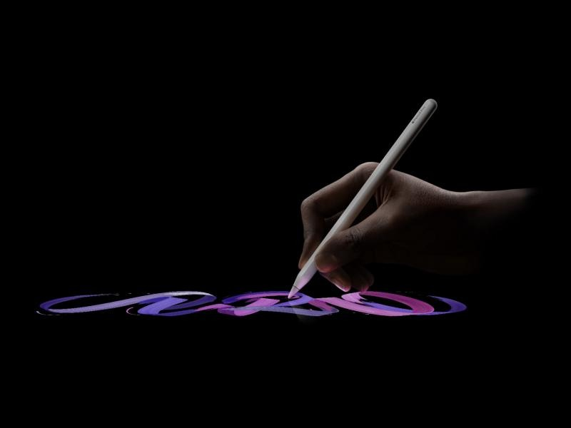
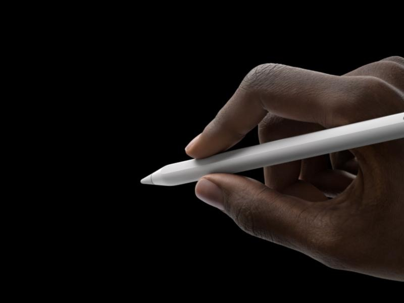

Qué es
El Apple Pencil Pro es un lápiz digital para iPad. Igual que los modelos anteriores, la pantalla detecta la presión y la inclinación de la punta, así que un trazo puede salir fino o grueso, suave o marcado, como con un lápiz normal.
Lo nuevo está en el cuerpo del lápiz. Lleva un sensor que detecta cuándo lo aprietas, un giroscopio que nota cuándo lo giras y un motor háptico que vibra un poco para confirmar las acciones. Además, el iPad muestra dónde va a caer la punta antes de tocar la pantalla.
Apple lo presentó el 7 de mayo de 2024 con los nuevos iPad Pro y iPad Air y se empezó a vender el 15 de mayo. Es el primer Apple Pencil que aparece en la app Encontrar, por si se pierde.
- Fabricante
- Apple
- A la venta
- 15 de mayo de 2024
- Sensores
- Presión, inclinación, apretón y giro
- Respuesta
- Vibración háptica
- Conexión
- Bluetooth y carga magnética
- Tamaño
- 166 mm, 19,15 g
- Funciona con
- iPad Pro (M4, M5), iPad Air (M2 o posterior) e iPad mini (A17 Pro o posterior)
- Precio
- 149 €
Por qué lo he elegido
El lápiz es la herramienta más antigua que usamos para escribir y dibujar, y aun así en los ordenadores se había quedado en un simple puntero. El Pencil Pro lo convierte en un dispositivo de entrada completo: traza, da órdenes y además devuelve una sensación al usuario. Estos son los motivos concretos.
No hay que aprender a usarlo
Cualquiera sabe coger un lápiz. Escribir, subrayar o hacer un esquema no exige memorizar atajos ni acostumbrarse a mover un ratón.
Las herramientas aparecen donde estás
Al apretarlo sale una paleta junto a la punta para cambiar de herramienta, grosor o color. No hace falta ir a un menú en la esquina de la pantalla.
Se comporta como un pincel
Al girarlo, las plumas y pinceles con forma cambian el trazo, igual que pasa con un rotulador de punta biselada sobre papel.
Te avisa sin mirar
Una vibración corta confirma que la orden se ha hecho. Es retroalimentación háptica, algo que hasta ahora no tenía ningún Apple Pencil.
Se ve antes de tocar
Al acercar la punta aparece una sombra de la herramienta en la pantalla, así sabes dónde caerá el trazo y se cometen menos errores.
Es difícil perderlo
Se queda pegado con imanes al lateral del iPad, donde también se carga, y si desaparece se busca con la app Encontrar.
Fotos


Cómo se usa
-
Acercar
El iPad detecta la punta antes de que toque el cristal y enseña dónde va a caer.
-
Trazar
La pantalla mide la presión y la inclinación para hacer el trazo más fino o más grueso.
-
Apretar o girar
Los sensores del cuerpo detectan el apretón y el giro y se lo mandan al iPad por Bluetooth.
-
Notarlo
El motor háptico vibra un instante para confirmar que la acción se ha hecho.
| Gesto | Qué hace |
|---|---|
| Apoyar la punta y deslizar | Escribir o dibujar |
| Apretar más o inclinar el lápiz | Trazo más grueso o sombreado |
| Apretar el cuerpo del lápiz | Abrir la paleta de herramientas |
| Girar el lápiz | Cambiar la orientación de pinceles y plumas |
| Dar dos toques en el lateral | Cambiar de herramienta, por ejemplo a la goma |
| Acercar la punta sin tocar | Ver una vista previa del trazo |
Evolución
Señalar directamente sobre la pantalla con un lápiz es casi tan antiguo como la propia interfaz gráfica. El Pencil Pro sustituye a una larga lista de lápices, punteros y tabletas, y recoge lo que cada uno hizo bien.
-
1963
Lápiz óptico de Sketchpad
Ivan Sutherland dibuja directamente sobre la pantalla con un lápiz de luz. Es el origen de la interacción gráfica, pero el lápiz iba con cable y cansaba el brazo.
-
Años 80
Tabletas digitalizadoras
Marcas como Wacom crean tabletas con lápiz sin cable para diseñadores. Se dibuja sobre la mesa mientras se mira otra pantalla, lo que cuesta acostumbrarse.
-
1996
PalmPilot
Las agendas electrónicas hacen popular el puntero de plástico. Solo sirve para pulsar: no detecta presión ni inclinación.
-
2002
Tablet PC de Microsoft
Portátiles con pantalla para escribir a mano. Eran pesados, reconocían mal la letra y no llegaron al gran público.
-
2007
El iPhone cambia el lápiz por el dedo
La pantalla multitáctil hace que el lápiz parezca innecesario. El dedo es cómodo, pero poco preciso para escribir o dibujar.
-
2011
Samsung Galaxy Note y S Pen
El lápiz vuelve al móvil, guardado dentro del propio teléfono y ya sensible a la presión.
-
2015
Apple Pencil, primera generación
Detecta presión e inclinación casi sin retraso. Para cargarlo había que enchufarlo al puerto del iPad, lo que resultaba incómodo.
-
2018
Apple Pencil, segunda generación
Se pega con imanes al iPad para cargarse y estrena el doble toque para cambiar de herramienta.
-
2024
Apple Pencil Pro
Suma el apretón, el giro, la vibración, la vista previa antes de tocar y la localización con Encontrar.
| Lápiz óptico | Puntero PalmPilot | Dedo | Apple Pencil 2 | Pencil Pro | |
|---|---|---|---|---|---|
| Precisión al escribir y dibujar | Baja | Media | Baja | Alta | Alta |
| Detecta presión e inclinación | No | No | No | Sí | Sí |
| Sin cables | No | Sí | Sí | Sí | Sí |
| Da órdenes sin tocar la pantalla | No | No | No | Doble toque | Apretón, giro y doble toque |
| Vibración háptica | No | No | No | No | Sí |
| Se puede localizar | No | No | No aplica | No | Sí |
Más información
- Apple Pencil en la web de Apple, con todos los modelos y sus diferencias.
- Apple Pencil Pro en la tienda de Apple, con el precio y los iPad compatibles.
- Especificaciones técnicas del Apple Pencil Pro en el soporte de Apple.
- Noticia de su presentación en MacRumors (en inglés).